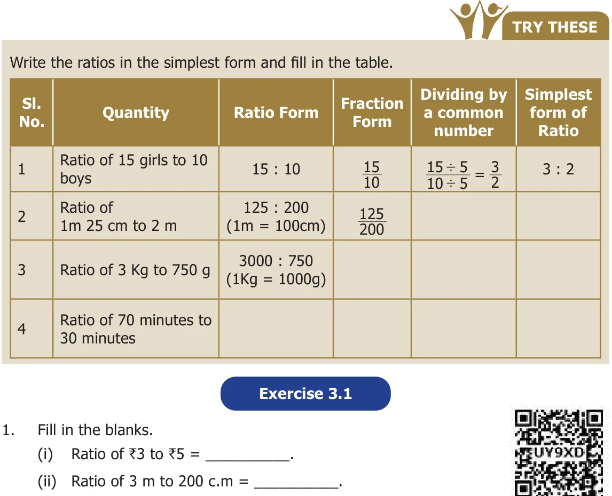

- Fill in the blanks.
- Ratio of 5 k.m 400 m to 6 k.m = \(\underline{\qquad}\).
- Ratio of 75 paise to ₹2 = \(\underline{\qquad}\).
- Say whether the following statements are True or False.
- The ratio of 130 c.m to 1 m is \(13 : 10\).
- One of the terms in a ratio cannot be 1.
- Find the simplified form of the following ratios.
(i) \(15 : 20\) (ii) \(32 : 24\) (iii) \(7 : 15\) (iv) \(12 : 27\) (v) \(75 : 100\) - Akilan walks 10 k.m in an hour while Selvi walks 6 km in an hour. Find the simplest ratio of the distance covered by Akilan to that of Selvi.
- The cost of parking a bicycle is ₹5 and the cost of parking a scooter is ₹15. Find the simplest ratio of the parking cost of a bicycle to that of a scooter.
- Out of 50 students in a class, 30 are boys. Find the ratio of
- number of boys to the number of girls.
- number of girls to the total number of students.
- number of boys to the total number of students.
Objective Type Questions
- The ratio of ₹1 to 20 paise is \(\underline{\qquad}\).
(a) \(1 : 5\) (b) \(1 : 2\) (c) \(2 : 1\) (d) \(5 : 1\) - The ratio of 1 \(l\) to 50 \(ml\) is \(\underline{\qquad}\).
(a) \(1 : 5\) (b) \(1 : 20\) (c) \(20 : 1\) (d) \(5 : 1\) - The length and breadth of a window are in 1m and 70 cm respectively. The ratio of the length to the breadth is \(\underline{\qquad}\).
(a) \(1 : 7\) (b) \(7 : 1\) (c) \(7 : 10\) (d) \(10 : 7\) - The ratio of the number of sides of a triangle to the number of sides of a rectangle is
(a) \(4 : 3\) (b) \(3 : 4\) (c) \(3 : 5\) (d) \(3 : 2\) - If Azhagan is 50 years old and his son is 10 years old then the simplest ratio between the age of Azhagan to his son is
(a) \(10 : 50\) (b) \(50 : 10\) (c) \(5 : 1\) (d) \(1 : 5\)